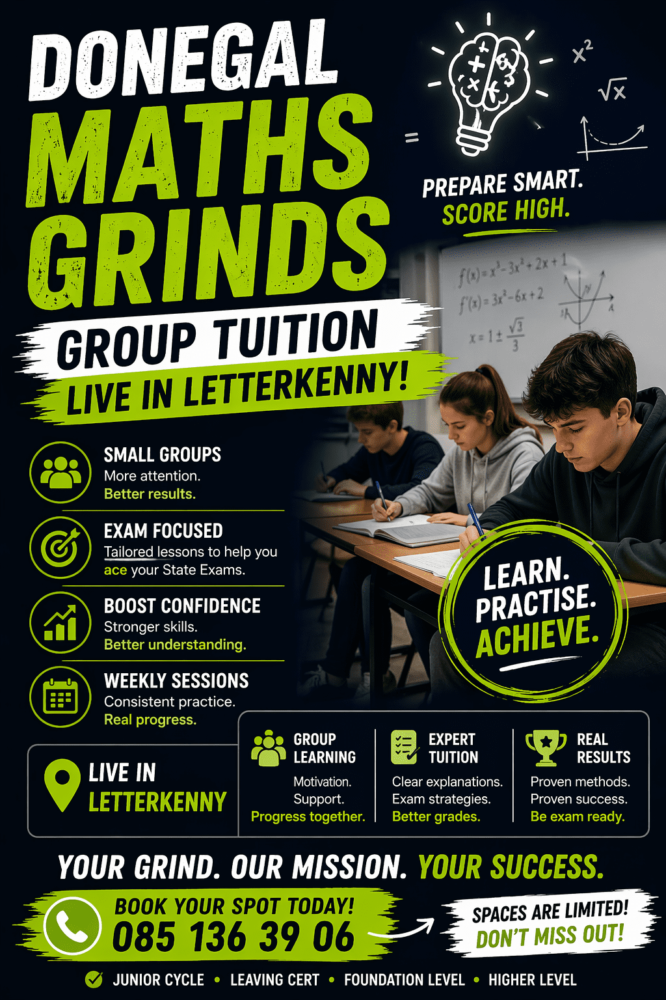

Academic Support Classes in Ireland
Explore 7 Academic Support classes and activities for kids across Ireland. Academic Support classes are most widely available in Wexford, Laois.


Local Grinds
Qualified Primary School Teacher, providing grinds in Maths and English to primary school aged children. Providing homework supports also.
View full details →
Maths Grinds Letterkenny | Leaving Cert & Junior Cert | DMG Donegal Maths Grinds
Struggling with Maths? Not sure where to start? DMG Donegal Maths Grinds provides expert maths tuition for: Leaving Cert (Higher & Ordinary Level) Junior Cert (Higher & Ordinary Level) ✔️ Clear step-by-step explanations ✔️ Focus on exam techniques ✔️ Identify weak areas fast ✔️ Proven results with real students 🎯 Start with a FREE maths test on our website and see your level instantly. 🌐 Website: www.donegalmathsgrinds.ie 📍 Based in Letterkenny – small group classes & online lessons available 💬 Message now to secure your place (limited spaces)
View full details →

Study Skills course (online)
Are you (or your child) spending hours revising but not seeing the results you hoped for? Feeling overwhelmed, stuck, or just unsure how to start? This four-session course is designed to change that. Why This Course Works This isn’t just a list of study tips. This is a practical, proven system tailored to students facing the pressures of school exams, whether they are facing the JC or LC exams. Across four engaging sessions, we’ll walk through how to: Organise time effectively without stress Study smarter, not longer Remember key facts with strategies that actually work Tackle exams with calm and clarity Build the kind of confidence that leads to better results What You’ll Learn Each session focuses on simple, effective techniques that can be used immediately. You’ll discover: How to understand the way your brain learns best How to create revision plans you’ll actually stick to Powerful ways to take notes, recall information, and prepare for exams Techniques to manage stress, boost motivation, and avoid burnout You’ll also receive downloadable worksheets, templates, and personalised tools to help make your study time more effective and less frustrating. Enroll today to make a difference: https://3057.freshlearn.com/31331
View full details →Summer grinds
Fully qualified primary teacher! 8 years experience offering in-person and online grinds in cork to primary school children English/maths/Irish to give them a confidence boost over summer holidays.
View full details →Mountrath - Toddler Group / Kids Book Clubs / STEM Group
Mountrath Library offers families baby and kids groups for free. The groups listed below are regular events, but the library runs many pop up classes/workshops throughout the year so sign up to their newsletter to stay up to date. 📍Location: Mountrath Library, Shannon Rd, Mountrath, Co. Laois 💶 Cost: € FREE 🧸Contact Details: you can contact mountrathlibrary@laoiscoco.ie/ 057 8756378 for any queries 🧸Baby and Toddler Group An open play session for babies and toddlers. Creative toys are placed in a circle on the floor to encourage children to socialise under the supervision of parents/guardians. 🗓️⏰Time: Every Wednesday from 10am-11:30am (confirm with the library as dates may change around school holidays) Junior Book Clubs - . Junior Graphic Novel Book Club -suitable for ages 9-12 years. New members welcome! 🗓️⏰Time: meets monthly on Thursdays at 4pm. -Ultimate Football Heroes Children’s Book Club - discuss The Ultimate Football Heroes series of soccer books by Matt & Tom Oldfield. 🗓️⏰Time: meets monthly on Wednesdays at 4pm STEM Play Discover science, technology, engineering and maths through the weekly STEM play hour. Suitable for ages 5+. Booking essential. 🗓️⏰Time: every Tuesday at 3:30pm NOTE: All the libraries in Laois share the same social media account.
View full details →Enniscorthy Library
Wexford Town Library offers fantastic groups for babies and kids. Rhyme Time - every Wednesday 11am Story Time - every Saturday 11am Junior Chess Club - every Wednesday 3.30 - 4.30 Lego Free Play - every Saturday 11am - 3pm Young Adult Book Club - every Wednesday 4.00-5.00
View full details →Gorey Library - Baby and Kids Groups
Gorey Library offers fantastic groups for babies and kids. Including: - Baby and Toddler Storytime - every Tuesday 11am - Lego Freeplay every Saturday 10.30 -12.30 - Parent and Toddler Rhyme and Song Time in Ukrainian - every second Wednesday of the month at 10.30 - Sensory Play - 11am every 3rd Monday of the month
View full details →